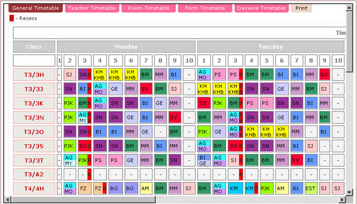
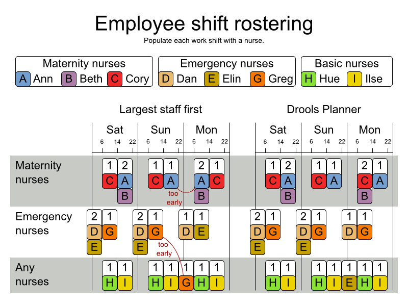

时刻表调度
时刻表调度问题是当前计算机科学、运筹学以及人工智能领域的一个研究热点。其目的是将拥有特定属性的事件需求与给定的资源（时间、空间、设备等）进行匹配，以使各种技术约束和用户约束尽可能地得到满足。该问题属于多约束组合优化问题，是一类典型的CSP问题。

时刻表调度问题有着非常广泛的实际应用。典型应用包括大学时刻表调度、员工时刻表调度、体育时刻表调度、交通时刻表调度等等。每个大学每学期都要制定课程时刻表和考试时刻表；航空公司需要安排各类技术和服务人员的班次来保障各个航班和乘客的需求；交通运输公司或部门需要合理地安排司机和车辆的时刻表来保证运输服务的需求。因此，为时刻表调度问题提供好的求解方案可以使实际应用部门在满足各类用户需求的前提下更加充分地利用资源、节省开支和成本，或者在有限的资源的前提下为用户提供更好的服务。
时刻表调度问题有着非常复杂的约束，要使得所有约束条件都得到满足是几乎不可能的。通常来说，时刻表调度问题的约束可分为硬约束和软约束。硬约束在任何情况下都要使其满足，否则所得到的解就为不可行解；而软约束则要求尽量多地满足。比较各个算法性能的好坏主要看在满足所有硬约束的前提下，哪个算法能满足的软约束更多。
正是由于这些复杂且相互制约的约束条件，使得对时刻表调度问题的求解异常困难。当前，关于时刻表调度问题的研究主要集中在启发式优化算法上。其原因在于，对于如此复杂的NP难度问题，精确算法只能求解规模非常小的问题实例。对于规模较大的问题实例，精确算法则需要动辄几天几夜甚至是天文数字的计算时间。因此，启发式优化算法便成为目前求解该类问题的唯一有效途径。本课题组对时刻表调度问题的数学模型以及其实际应用进行了广泛而深入的研究，研究水平属于国际先进水平。例如，在第二届国际时刻表竞赛中，实验室获得了银奖一项（第二名），第一名为美国普杜大学研究员。
人员排班调度
同时刻表调度问题类似，人员排班问题也是当前计算机科学、运筹学以及人工智能领域的一个研究热点。其目的是在满足人员需求的情况下合理地为人员进行班次的排列，使得各种技术约束尽可能地得到满足。

例如，医院管理者面临着如何安排医生护士的班次以使得病人的需求得到更好的满足，并且使得医生护士的班次尽量合理，如满足最大/最小连续工作天数，最大/小连续休息天数，夜班后至少要休息的天数，最多连续工作周末数，特定的请求，替代技能，不希望的工作模式等等；航空公司需要安排各类地面人员、空乘人员、飞行员和其它行政管理和服务人员的班次来保障各个航班和乘客的需求。因此，人员排班调度问题的有效求解可以使实际应用部门在满足各类用户需求的前提下更加充分地利用资源、节省开支和成本，或者在有限的资源的前提下为用户提供更好的服务。
同时刻表调度问题相似，人员排班班调度问题也有着非常复杂的约束，要使得所有约束条件都得到满足是几乎不可能的。通常来说，约束可分为硬约束和软约束。硬约束在任何情况下都要使其满足，否则所得到的解就为不可行解；而软约束则要求尽量多地满足。比较各个算法性能的好坏主要看在满足所有硬约束的前提下，哪个算法能满足的软约束更多。本课题组对人员排班调度问题的数学模型及其求解方案进行了深入的研究，在2010年举行的国际护士排班竞赛中获得了铜奖一项（第三名）。
地址：中国·湖北省·武汉市·珞喻路1037号·华中科技大学南一楼四楼 邮编：430074 联系电话：027-87543885 登陆入口
本网站由yechao开发维护，如有问题，邮件至 Email: ye_hust@sina.com